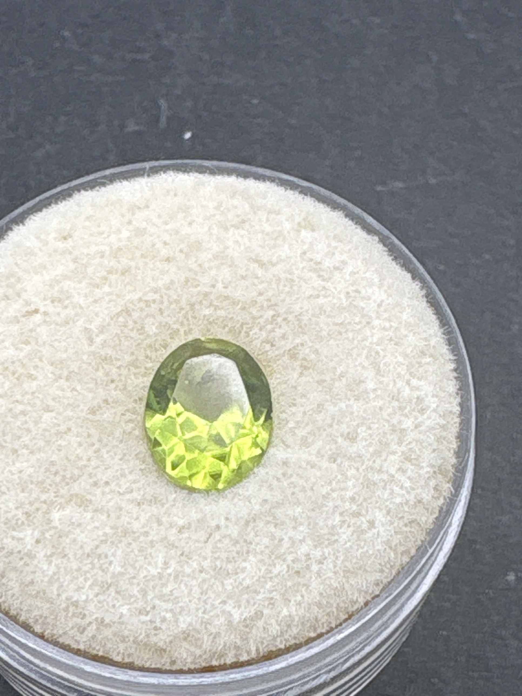

The Gem Drawer › No. 133

A saturated olive-yellow-green oval — the most confident call in the tray.
| Catalogue no. | #133 |
|---|---|
| As labeled | Peridot (probable, based on color) - vivid yellow-green oval-cut stone (no label; visual ID only, not certified - see notes) |
| Shape / cut | Oval |
| Weight | Not recorded |
| Measurements | Not recorded |
| Colour | Vivid, saturated yellow-green / olive-green |
| Clarity / condition | Not recorded |
Interested in this stone, or in the collection as a whole? Terry VanWormer can answer questions about it.
Click here to inquireor email Terry directly at maxrebo34@gmail.com